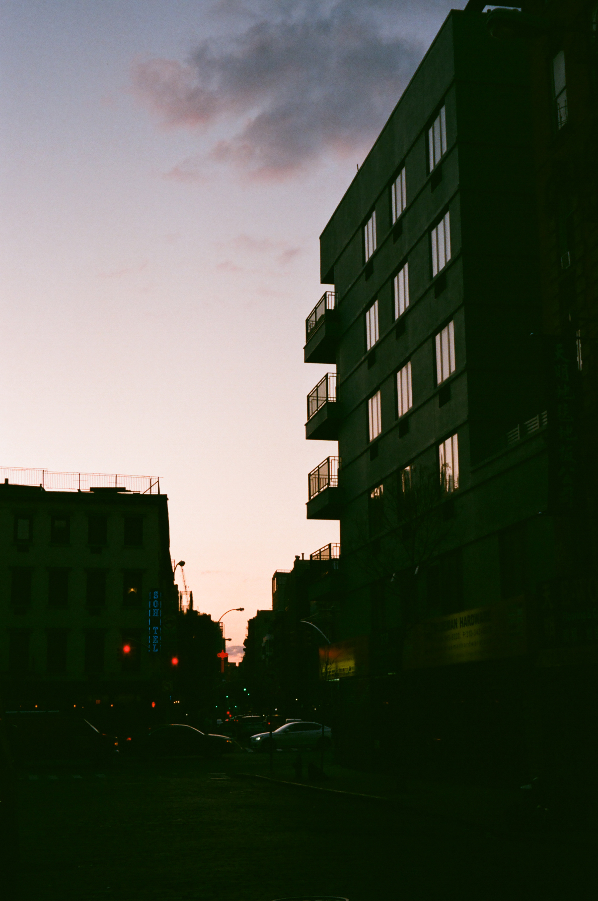
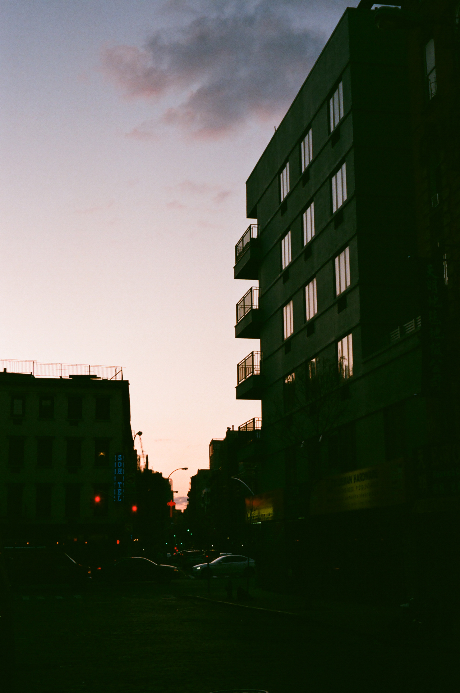

It's October! While summer lasted until a couple of weeks ago, I wonder how many people remember we were getting snow in this May.

I've always thought winter is better than summer. As a person who was born in the highest heat, grew up in a semi-tropical place on Earth, I don't despise summer, no, but I enjoy winter nonetheless. In terms of summertime sadness (im joking), here are some photos.


Nearby this area West Village, there is a tea house called Té Company, which sells solely Taiwanese tea. The owner travels back to Taiwan and personally sources the season's tea every three months or half a year. She is quite knowledgable in tea. Highly recommend this place for people who are interested in getting high quality Oolong, Iron Goddess, and Purple Leaf.
more info about Té Company
 

Natsumi and I went to a gallery/cafe called Cafe Usagi, meaning Cafe Rabbit in Japanese. It's in Dumbo, Brooklyn.
Another photo is taken around Chinatown / Little Italy.
more info about Usagi NY